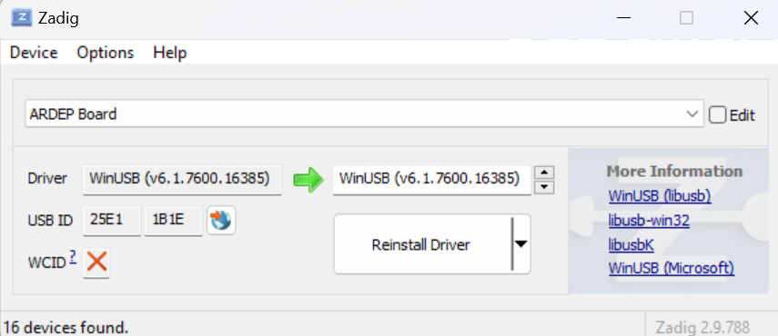

Getting Started¶
Follow this guide to:
Set up your first workspace
Install the Zephyr RTOS SDK
Enable the dfu-util to perform Firmware upgrades
Build and flash your first sample application
The instructions here closely follow the Zephyr RTOS Getting Started Guide but are modified to setup an ARDEP workspace instead of a vanilla Zephyr workspace. [1]
Install dependencies¶
Follow Zephyr’s OS Update Section and then the Install dependencies section.
Note
For Windows user:
You might need to manually add the 7zip installation folder to your $PATH. It is usually installed under
C:\Program Files\7-Zip. [2]One of your testers reported, that the
pythonexecutable was actually calledpyon his device. You can check this with thepython --versionorpy --versionin a command prompt. If you see the version (e.g. Python 3.13.7) the executable is found.
Install the additional dependencies for the ardep board:
sudo apt update
sudo apt install --no-install-recommends iproute2 dfu-util git-lfs gdb-multiarch
Install the latest dfu-util from the release page (e.g. dfu-util-X.YY-binaries.tar.xz), extract the archive and ensure the executables are in your $PATH. [2]
Open a new command prompt or powershell and run
dfu-util --versionto check that the command is available.Install the latest ARM toolchain for a current version of GDB. On the download page, select the latest AArch32 bare-metal target (arm-none-eabi) toolchain (e.g. arm-gnu-toolchain-14.3.rel1-mingw-w64-x86_64-arm-none-eabi.exe) and install it.
It is recommended, that you add the bin directory of the installation to your $PATH for easier access to the executables (e.g. the path
C:\Program Files (x86)\Arm GNU Toolchain arm-none-eabi\14.3 rel1\bin). [2]
Set up your workspace¶
We will clone the ARDEP repository, Zephyr and all required modules into a new west workspace and install all required python dependencies in a Python virtual environment.
In the following, we use ardep-workspace as the name for the workspace and locate it in our $HOME directory, but you can choose any name and location you want.
Create a new virtual environment
python3 -m venv ~/ardep-workspace/.venvActivate the virtual environment
source ardep-workspace/.venv/bin/activateNote
Remember to do activate the virtual environment whenver you start working.
Install west:
pip install westGet the ARDEP source code:
west init -m https://github.com/mercedes-benz/ardep.git ~/ardep-workspaceGet the source code for Zephyr and all its dependencies:
cd ~/ardep-workspace west updateExport a Zephyr CMake package. This allows CMake to automatically load boilerplate code required for building Zephyr applications.
west zephyr-exportInstall python dependencies for other west commands:
west packages pip # Lists all requirement.txt files that get installed west packages pip --install # Actually install the packages
Open a command prompt or PowerShell as a regular user
Create a new virtual environment
cd %HOMEPATH% python -m venv ardep-workspace\.venvcd $Env:HOMEPATH python -m venv ardep-workspace\.venvActivate the virtual environment
ardep-workspace\.venv\Scripts\activate.batardep-workspace\.venv\Scripts\Activate.ps1Note
Remember to do activate the virtual environment whenver you start working.
Install west:
pip install westGet the ARDEP source code:
west init -m https://github.com/mercedes-benz/ardep.git ardep-workspaceGet the source code for Zephyr and all its dependencies:
cd ardep-workspace west updateExport a Zephyr CMake package. This allows CMake to automatically load boilerplate code required for building Zephyr applications.
west zephyr-exportInstall python dependencies for other west commands:
west packages pip # Lists all requirement.txt files that get installed west packages pip --install # Actually install the packages
Install the Zephyr SDK¶
We will install the Zephyr SDK which contains the toolchain for every by Zephyr supported architectures. Additionally it contains host tools for Linux such as a custom QEMU and OpenOCD build for emulation, flashing and debugging.
Install the Zephyr SDK using
west sdk install.cd ~/ardep-workspace/zephyr west sdk installNote
See
west sdk install --helpfor more command options (e.g. install location)Install the Zephyr SDK using
west sdk install.cd %HOMEPATH%\ardep-workspace\zephyr west sdk installcd $Env:HOMEPATH\ardep-workspace\zephyr west sdk installNote
See
west sdk install --helpfor more command options (e.g. install location)
Enable the DFU-Util to perform firmware upgrades¶
Note
This step is only required if you have a board revision < 2.0.0
west ardep create-udev-rule
sudo udevadm control --reload-rules
sudo udevadm trigger
This rule allows dfu-util to access your ardep board without sudo privileges (required for firmware upgrades via dfu-util).
If your ardep board is already connected, unplug and replug it.
We need to install WinUSB drivers for the device in order to be able to use dfu-util.
You can use the Zadig tool to install the drivers.
If you haven’t connected your ARDEP board to host, connect it now.
After starting Zadig, ensure the List all devices option is turned on in the Options menu. Then, in the dropdown menu, select Ardep (Interface 0) install the WinUSB driver. Then repeat the step for Ardep (Interface 2). This allows us to set the device into DFU mode.
We also need to install a driver for the DFU mode. For this, we need to build a sample application and unsuccessfully try to flash the firmware (see Build your first app).
After the initial flash command failed, select the Ardep board in the dropdown menu and install the WinUSB driver again.
Now, flashing the app should succeed.
Enable the Black-Magic Debugger on your host¶
Note
This step is recommended, if you have a board revision >= 2.0.0
Perform the Connecting to your Computer Step in the Getting Started Guide of the Black-Magic Debugger.
This enables you to use the on-board debugger without root/admin privileges.
Build your first app¶
Build the LED Sample with:
cd ~/ardep-workspace/ardep west build --board ardep samples/ledcd %HOMEPATH%\ardep-workspace\ardep west build --board ardep samples\ledcd $Env:HOMEPATH\ardep-workspace\ardep west build --board ardep samples\led
Note
If you’re using an older version of the board, append the board version to the boards name (e.g. --board ardep@a1.0.0 or --board ardep@1 for version 1 of the board).
Flash the app using dfu-util:
west flash